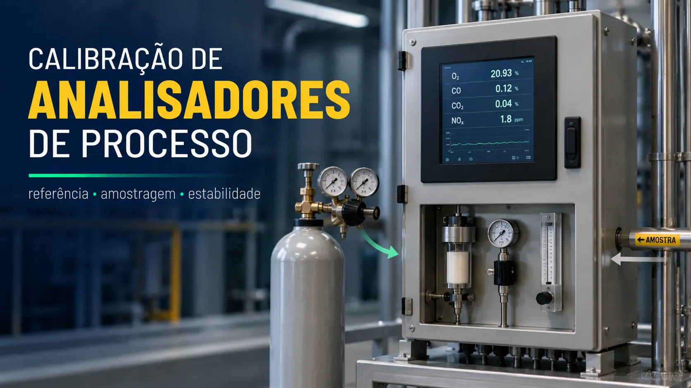

Calibração e diagnóstico de analisadores de processo
Conteúdo técnico: ALOGY Engenharia · Atualizado em: 11/09/2026

Analisadores de pH, ORP, condutividade, cloro e outras variáveis analíticas não devem ser avaliados apenas pela saída 4–20 mA. A cadeia de medição pode incluir tomada de amostra, condicionamento, sensor, referência, compensação de temperatura, reagentes, transmissor e conversão para o PLC/CLP ou DCS.
Verificação, calibração, ajuste e manutenção
- Verificação: compara a indicação com solução ou referência conhecida, sem alterar parâmetros.
- Calibração: determina e registra a relação entre referência e indicação.
- Ajuste: modifica slope, zero, cell constant ou outro parâmetro permitido para reduzir o desvio.
- Manutenção do analisador: trata contaminação, junção, eletrólito, membrana, reagente, cabo, amostra e instalação.
Registrar as-found antes de limpar ou ajustar ajuda a separar deriva real do sensor de sujeira ou problema de amostragem.
Defina qual parte da cadeia será verificada
- Elemento analítico: sensor em solução ou padrão conhecido.
- Transmissor/analyzer: conversão do sinal, compensações e diagnósticos.
- Saída e supervisão: 4–20 mA ou comunicação digital até PLC/DCS/supervisório.
- Sistema de amostragem: tomada, linha, filtros, válvulas, vazão, pressão, temperatura e descarte.
Uma calibração de bancada pode demonstrar a resposta do sensor e ainda deixar sem teste atraso, contaminação ou mudança de fase gerada na sample line.
Antes de retirar o sensor
- TAG, variável, range, unidade, temperatura e critério do procedimento.
- Padrões adequados à faixa, dentro da validade e identificados por lote.
- Condição do porta-sensor, fluxo, pressão, bolhas, aterramento e sample system.
- Tempo de estabilização e compensação de temperatura previstos no manual.
- Forma segura de isolar, despressurizar, lavar e devolver o ponto ao processo.
Sequência prática
- Registre indicação, temperatura, diagnóstico, vazão de amostra e saída as-found.
- Remova depósitos usando método compatível com sensor e contaminante.
- Enxágue sem retornar líquido usado ao frasco e aguarde estabilidade.
- Faça a verificação nos pontos previstos; ajuste somente se o procedimento permitir.
- Confirme o resultado com padrão independente ou nova porção da solução.
- Verifique separadamente a saída para o sistema de controle, quando fizer parte do escopo.
- Registre resultado as-left, padrão, lote, validade, temperatura, tempo de resposta e observações.
O procedimento muda conforme a variável
| Variável | O que observar | Erro comum |
|---|---|---|
| pH | Buffers, temperatura, slope, zero e estabilidade da junção. | Ajustar sensor sujo ou contaminar buffers. |
| ORP | Solução de referência, temperatura, eletrodo e estabilização. | Tratar mV como concentração ou usar limite genérico. |
| Condutividade | Padrão, cell constant, temperatura e compensação. | Comparar valores com temperatura-base diferente. |
| Cloro amperométrico | Fluxo, pressão, membrana, eletrólito, pH/temperatura quando aplicável. | Comparar amostras de instantes diferentes. |
| Colorimétrico/reagente | Branco, padrão, reagentes, bomba, ciclo, fotômetro e descarte. | Ajustar sem confirmar dosagem, validade e limpeza óptica. |
Amperométrico não é colorimétrico
| Sistema | Antes de ajustar | Evidência |
|---|---|---|
| Amperométrico | Vazão/pressão da célula, bolhas, membrana, eletrólito, temperatura e pH quando o princípio exigir. | Condição encontrada, item substituído, estabilização e comparação sincronizada. |
| Colorimétrico com DPD | Validade/lote de reagentes, escorva, dosagem, mangueiras, ciclo, branco, célula e óptica. | Reagentes, volumes/ciclo, branco, padrão, limpeza e resultado após ciclo estável. |
| Comum | Separe amostragem, medição local e transmissão ao PLC. | As-found, após manutenção e as-left com horário e diagnósticos. |
Como interpretar as-found, após limpeza e as-left
- Melhora após limpeza, sem ajuste: forte influência de incrustação, óleo, biofilme ou obstrução.
- Permanece deslocado, mas estável: pode exigir ajuste permitido ou investigação de offset/referência.
- Não estabiliza: investigue referência, membrana, eletrólito, bolhas, aterramento, temperatura e vida útil.
- Sensor responde, processo não: procure atraso, vazão, contaminação cruzada, reagente degradado ou falha no ponto de coleta.
Diagnóstico por subsistema
| Sintoma | Verificação inicial | Separação da causa |
|---|---|---|
| Online diferente da bancada | Ponto, horário, espécie química, método, pH, temperatura e delay. | Compare resultados sincronizados e depois aplique padrão diretamente no analisador. |
| Resposta lenta | Vazão, pressão, filtros, volume morto, membrana, ciclo e damping. | Degrau no analisador testa equipamento; no início da linha inclui transporte. |
| Ruído/picos | Bolhas, vazão pulsante, aterramento, umidade, reagentes e estabilidade térmica. | Observe valor local e saída simultaneamente. |
| Local correto e supervisório errado | Range 4–20 mA, unidade, escala do cartão e comunicação. | Simule pontos conhecidos da saída sem alterar a calibração analítica. |
Exemplo: diferença causada pelo tempo
Um analisador de cloro indica 0,62 mg/L enquanto uma amostra manual resulta em 0,48 mg/L. Se a linha online possui quatro minutos de atraso e o residual está caindo, os números podem representar instantes diferentes. Antes de ajustar, alinhe horário da tomada de amostra com o valor que efetivamente chega à célula.
Ferramentas e referências
- Calibração de pHmetro
- ORP em mV
- Condutividade e TDS
- Tempo de amostragem
- Swagelok — time delay em analytical instrumentation systems
- BIPM — Vocabulário Internacional de Metrologia
Aviso técnico
Conteúdo informativo. Não substitui procedimento aprovado, análise química, rastreabilidade dos padrões, manual do fabricante, avaliação de incerteza ou liberação de processo. Não retire sensores de linhas pressurizadas ou meios perigosos sem isolamento e condição segura definidos.